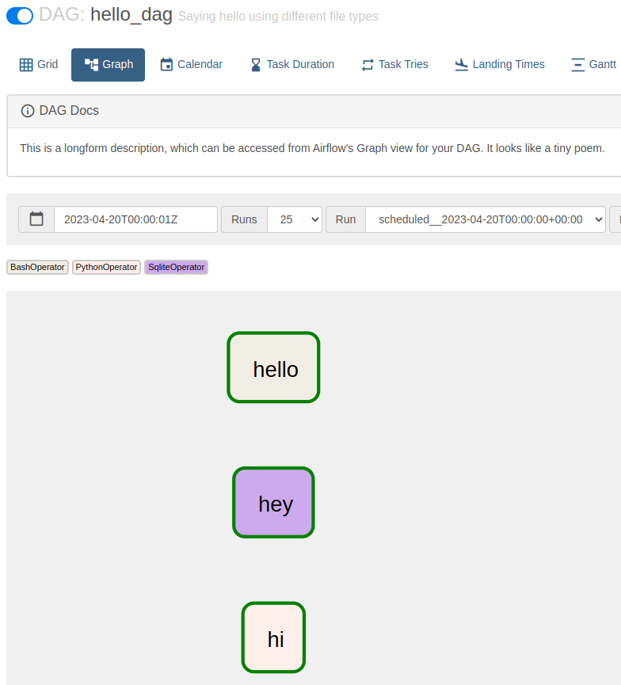

1 Basic DAG Structure
To familiarize ourselved with gusty, we’ll start by making a simple DAG, called hello_dag.
1.1 gusty DAG Structure
A gusty DAG lives inside of your Airflow DAGs folder (by default $AIRFLOW_HOME/dags), and is comprised of a few core elements:
Task Definition Files - Each file hold specifications for a given task. In the example below,
hi.py,hey.sql, andhello.ymlare our Task Definition Files. These Task Definition Files are all stored inside ourhello_dagfolder.METADATA.yml - This optional file contains any argument that could be passed to Airflow’s DAG object, as well as some optional gusty-specifc argument. In the example below,
METADATA.ymlis stored inside of ourhello_dagfolder, alongside the Task Definition Files.DAG Generation File - The file that turns a gusty DAG folder into an Airflow DAG. It’s more or less like any other Airflow DAG file, and it will contain gusty’s
create_dagfunction. In the example below,hello_dag.pyis our DAG Generation File. The DAG Generation File does not need to be named identically to the DAG folder.
$AIRFLOW_HOME/dags/
│
├── hello_dag/
│ ├── METADATA.yml
│ ├── hi.py
│ ├── hey.sql
│ └── hello.yml
│
└── hello_dag.pyThe contents of this hello_dag folder will produce the Airflow DAG seen below.

In the event you wanted to create a second gusty DAG, you can just repeat this pattern. For example, if we wanted to add goodbye_dag:
$AIRFLOW_HOME/dags/
│
├── goodbye_dag/
│ ├── METADATA.yml
│ ├── bye.py
│ ├── later.sql
│ └── goodbye.yml
|
├── hello_dag/
│ ├── METADATA.yml
│ ├── hi.py
│ ├── hey.sql
│ └── hello.yml
│
├── goodbye_dag.py
└── hello_dag.py1.2 Task Definition Files
The three primary file types used for Task Definition Files are Python, SQL, and YAML. gusty supports other file types, but these three are the most commonly used. The general pattern for Task Definition files is that they contain:
Frontmatter - YAML which carries the specification and parameterization for the task. This can include which Airflow (or custom) operator to use, any keyword arguments to be passed to that operator, and any task dependencies the given task may have.
Body - The primary contents of the task. For example, the Body of a SQL file is the SQL statement which will be executed; the body of a Python file can be the
python_callablethat will be ran by the operator. For YAML files, there is no Body because the whole Task Definition File is YAML.
gusty will pass any argument that can be passed to the operator specified (as well as any BaseOperator arguments) to the operator. The specified operator should be a full path to that operator.
The file name of each Task Definition File will become the name of the Airflow task.
Let’s explore these different file types by looking at the contents of these Task Definition Files in hello_dag.
YAML Files with hello.yml
Here are the contents of our hello.yml file:
operator: airflow.operators.bash.BashOperator
bash_command: echo helloThe resulting task would contain a BashOperator with the task id hello.
Because the entire file is YAML, there is no separation of Frontmatter and Body.
SQL Files with hey.sql
Here are the contents of our hey.sql file:
---
operator: airflow.providers.sqlite.operators.sqlite.SqliteOperator
---
SELECT 'hey'The resulting task would contain a SqliteOperator with the task id hey.
The Frontmatter of our SQL file is encased in a set of triple dashes (---). The Body of the file is everything below the second set of triple dashes. For SQL files, the Body of the file is passed to the sql argument of the underlying operator. In this case, SELECT 'hey' would be passed to the sql argument.
Python Files with hi.py
Here are the contents of our hi.py file:
# ---
# python_callable: say_hi
# ---
def say_hi():
greeeting = "hi"
print(greeeting)
return greeetingThe resulting task would contain a PythonOperator with the task id hi.
The Frontmatter of our Python file is also encased in a set of triple dashes (---), but you will also note that the entirety of the Frontmatter, including the triple dashes, is prefixed by comment hashes (#).
By default, gusty will specify specify Airflow’s PythonOperator as the operator, when no operator argument is provided. As with any Task Definition File, you can specify whatever operator is available to you in your Airflow environment, so you could just as easily add operator: airflow.operators.python.PythonVirtualenvOperator to this Frontmatter to use the PythonVirtualenvOperator instead of the PythonOperator.
When a python_callable is specified in the Frontmatter of a Python file, gusty will search the Body of the Python file for a function with the name specified in the Frontmatter’s python_callable argument. For the best results with Python files, it’s recommended that you put all of the Body contents in a named function, as illustrated above.
1.3 METADATA.yml
The METADATA.yml file is a special file for passing DAG-related arguments to Airflow’s DAG object. Airflow’s DAG object takes arguments like schedule (when you want your DAG to run), default_args.start_date (how far back you want your DAG to start), default_args.email (who should be notified if a task in DAG fails), and more. The METADATA.yml file is a convenient way to pass this information to Airflow.
Let’s look at the contents of the METADATA.yml file in our hello_dag folder:
description: "Saying hello using different file types"
doc_md: |-
This is a longform description,
which can be accessed from Airflow's
Graph view for your DAG. It looks
like a tiny poem.
schedule: "0 0 * * *"
catchup: False
default_args:
owner: You
email: you@you.com
start_date: !days_ago 28
email_on_failure: True
email_on_retry: False
retries: 1
retry_delay: !timedelta
minutes: 5
tags:
- docs
- demo
- helloThe above METADATA.yml configures a DAG that runs once a day (schedule: "0 0 * * *"), has a start date of 28 days ago (default_args.start_date: !days_ago 28), and is tagged with the tags docs, demo, and hello. It also adds a description, a doc_md, and more, but every argument here is simply an argument in Airflow’s DAG object.
The only thing that you might not have seen before are YAML constructors, as illustrated above in the default_args.start_date (using !days_ago) and default_args.retry_delay (using !timedelta) arguments, which are calling functions inside of YAML. In short, YAML constructors are just Python functions that are called when your YAML (or any Task Definition File Frontmatter) is loaded. We’ll discuss YAML constructors more in later sections, but they are a powerful way to control file-oriented DAGs and tasks, and help ensure you have just as much control over your DAGs as writing them any other way.
We’ll also cover gusty-specific METADATA.yml later on, but for now, all you need to know is that the METADATA.yml file is used for passing arguments to Airflow’s DAG object.
1.4 DAG Generation File
Finally, let’s look at the DAG Generation File that ultimately generates the Airflow DAG, hello_dag.py:
import os
from gusty import create_dag
# There are many different ways to find Airflow's DAGs directory.
# hello_dag_dir returns something like: "/usr/local/airflow/dags/hello_dag"
hello_dag_dir = os.path.join(
os.environ["AIRFLOW_HOME"],
"dags",
"hello_dag")
hello_dag = create_dag(hello_dag_dir, latest_only=False)gusty’s create_dag function takes as its first argument the path to a directory containing Task Definition Files, in our case the hello_dag direcory. Any keyword argument that can be passed to Airflow’s DAG object can be passed to create_dag, where any arguments that are specified both in create_dag and METADATA.yml will take the value specified in METADATA.yml.
Additionally, create_dag takes some gusty-specific arguments, one of which is illustrated here: latest_only=False, which disables gusty’s default behavior of installing a LatestOnlyOperator at the absolute root of an Airflow DAG. You can read more about the LatestOnlyOperator in Airflow’s documentation, but setting latest_only=False will ensure a gusty-generated DAG mirrors Airflow’s default behavior.
In subsequent chapters, we’ll cover more of gusty’s capabilities, but these are the core components of generating a file-oriented Airflow DAG with gusty!